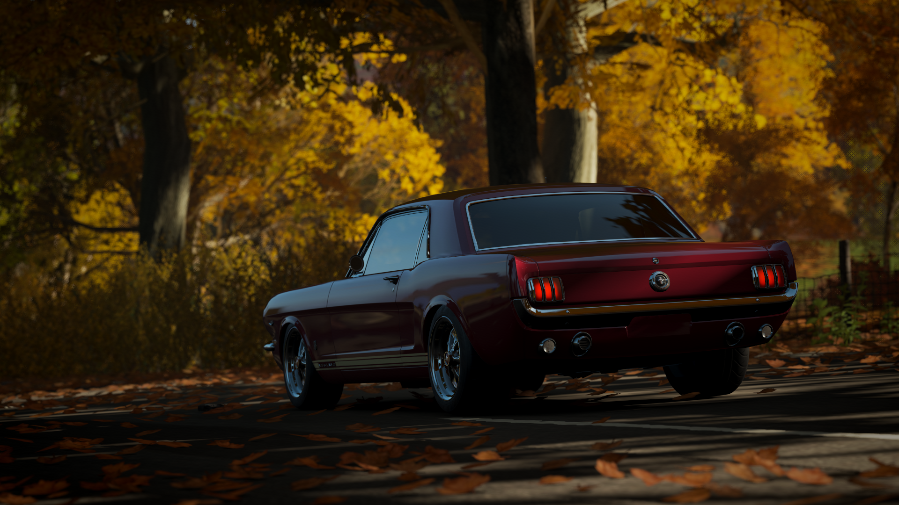
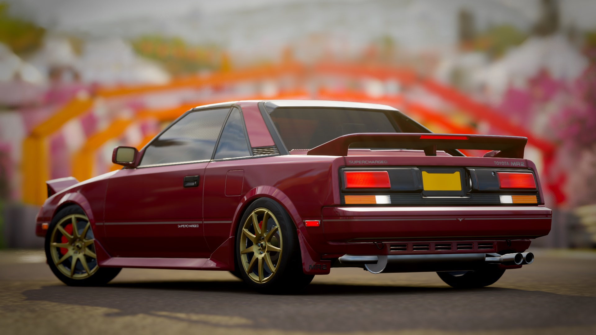
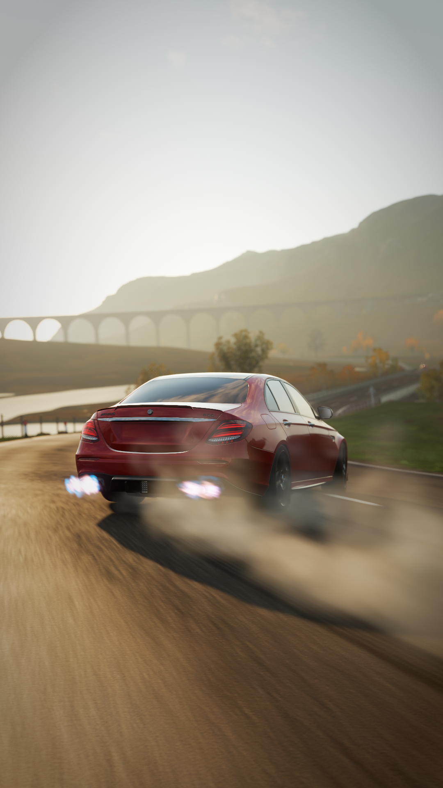
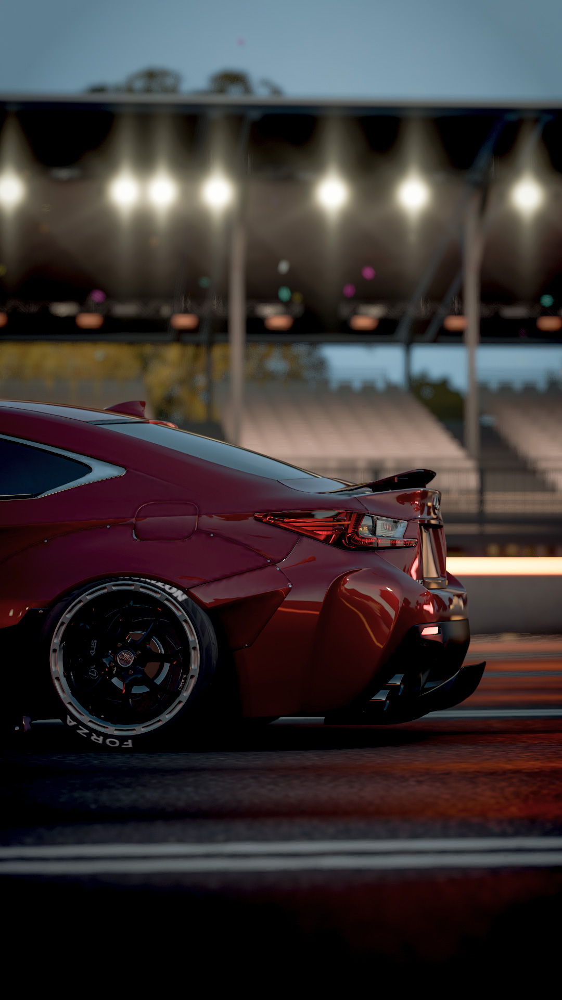
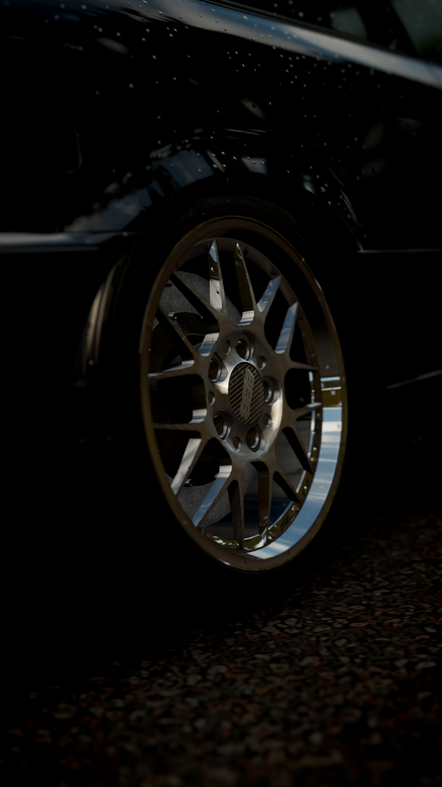
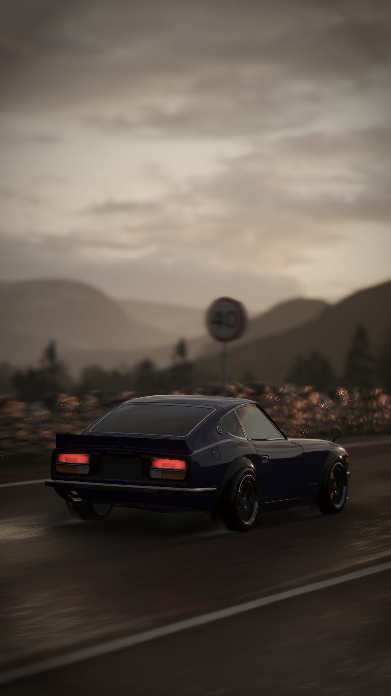
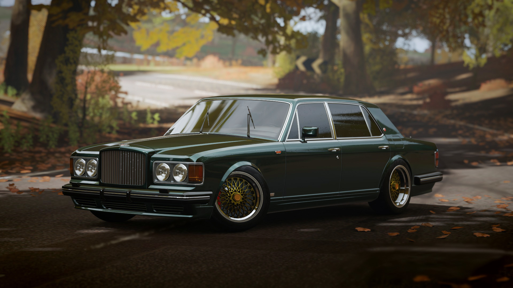
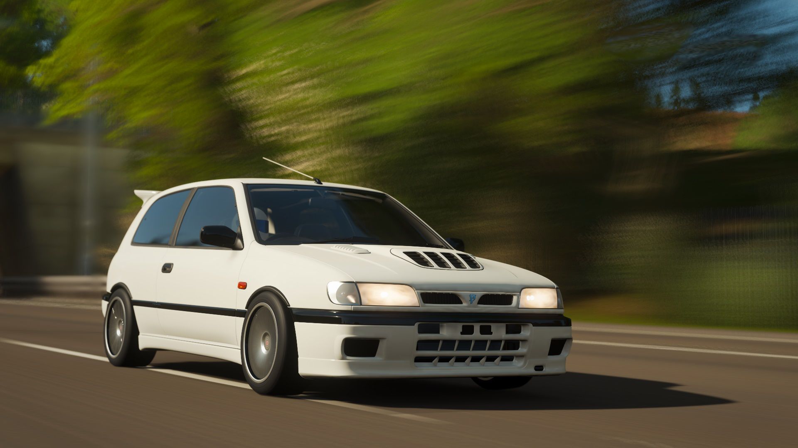

Kedvenc témám a fényképezésnél a járművek. Általában rendezvényeken szoktam hobbi szinten fotózni, de a járványhelyzet alatt ezek hiánya miatt csak számítógépes játékokban tudtam. Főleg a Forza Horizon 4-ben, a GTA 5-ben és a The Crew 2-ban gyakoroltam ezt a művészetet.
My favourite subject when it comes to photography is automotive related. I usually take photos during events, but because of COVID I had to resort to taking them in video games. My preferred games to do this in is Forza Horizon 4, GTA 5 and The Crew 2.
Forza Horizon 4 képek
Forza Horizon 4 photos
|  |  | ||
|  |  |  |  |
|  |  | ||
IRL fotók
IRL photos

|

|

|

|
Editelés
Editing
Az eredeti képeket néha editelni/szerkeszteni is szoktam. Leggyakrabban a hátteren, a színvilágon módosítok, a rendszámtáblákat kivágom vagy a kisebb hibákat szerkesztem ki a képekből.
I sometimes edit the raw photos. I mostly change the background, the color scheme, remove the license plates or I edit out smaller imperfections from the pictures.